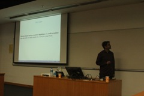
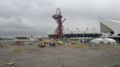

|
A new year, a new winter! |
School of Computer Engineering, NTU |
Brilliant sugarcane juice stall on campus... |
|
Kew Gardens |
Durdle Door, |
Cliffs near Lulworth Cove and Durdle Door |
|
Chesil Beach! An amazing geological structure - a high pebble beach out in the sea… stretches for ~17 miles and creates a biologically intersting Fleet lagoon... |
Hong Kong for ARC |
A Chinese temple at New Territories |
|
Enjoying a pint at the Yorkshire Pudding, SoHo |
 Abid's ARC talk |
Hiking ini HK with David Boland and Florent de Dinechin |
|
Sun and the sea returning from Lamma Island |
2012 students |
Ketan and Neeta in London.. |
|
Walking from Sevenoaks to Borough Green… Quick stop at Knole house… historic old house that was owned by many famous folks who could suck up to the Royals in London. |
Middlesex Filter beds… |
 The Olympic park under construction with mere months to go... |
|
Some road walking from Ashford to Chilham |
At Guy's cottage in Ontario |
With Rafi and Guy |
|
Chatsworth House Estate.. |
Buxton Crescent |
Alan Turing's Teddy Bear... |
|
A geek girl explaining the Colossus Machine that broke the Lorenz code... :) |
My third and longest hiking trip in the UK - Lake District… Most strenuous and most beautiful of the lot! This is Lake Windermere... |
After an easy first day and first half of the afternoon, the hard work begins… It is actually just as hard as it looks and I probably went up the wrong way and almost got cragfast :P I did end up at Coniston in severely dehydrated and malnourished state! |
|
Sweeping views of the Peak District ranges… Amazing, stunning, breathtaking! |
After summitting the Old Man of Coniston, I headed off towards Wastwater - I would have walked for 10 hours at the end of this day! Absolutely at the limit of my endurance.. |
Looking back towards the steep cliffy descent from Old Man… No way that is a legitimate trail... |